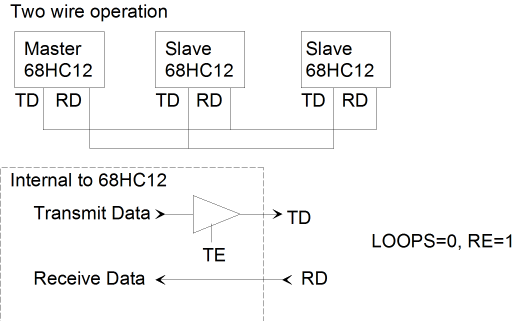
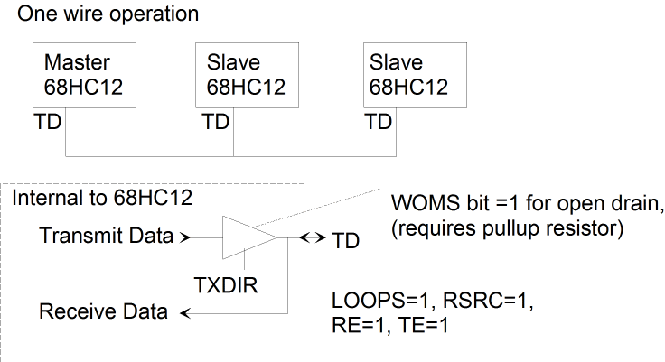

| Previous Section | Next Section | Index | Questions | Search the Text |
The 68HCS12 has two Serial Communication Interfaces, each providing a Transmit Data and a Receive Data signal suitable for an RS232 interface. Each SCI can be be configured for eight or nine data bits, the most significant can be configured as an even or odd parity bit which is generated automatically on transmission and checked on reception. There is always a single stop bit. Transmission data rates can be selected independently for each SCI, however the transmit and the receive rate for a single SCI must be the same.
More than two microcontrollers can be connected together via the SCI interface in a single master, multiple slave arrangement. A wired-or mode allows a single-wire connection among microcontrollers where only one microcontroller can transmit at one time. This will be described below.
SCI0 has control registers SC0BDH, SC0BDL, SC0CR1, SC0CR2, status registers SC0SR1, SC0SR2, and data registers SC0DRH and SC0DRL SCI1 has an identical set of registers. The SCI's uses pins of port S, PS0 for receive data (RD) and PS1 for transmit data (TD) for SCI0, and PS2 for receive and PS3 for transmit of SCI1. The Port S data register, PTS, input register, PTIS, and data direction register, DDRS, are ignored if the pin is being used for the serial port. Here is the table of control, status, and data registers:
| Register | Bit 7 | Bit 6 | Bit 5 | Bit 4 | Bit 3 | Bit 2 | Bit 1 | Bit 0 |
|---|---|---|---|---|---|---|---|---|
| SCnBDH | Reserved | Reserved | Reserved | SBR12 | SBR11 | SBR10 | SBR9 | SBR8 |
| SCnBDL | SBR7 | SBR6 | SBR5 | SBR4 | SBR3 | SBR2 | SBR1 | SBR0 |
| SCnCR1 | LOOPS | SCISWAI | RSRC | M | WAKE | ILT | PE | PT |
| SCnCR2 | TIE | TCIE | RIE | ILIE | TE | RE | RWU | SBK |
| SCnSR1 | TDRE | TC | RDRF | IDLE | OR | NF | FE | PF |
| SCnSR2 | 0 | 0 | 0 | 0 | 0 | BRK13 | TXDIR | RAF |
| SCnDRH | R8 | T8 | 0 | 0 | 0 | 0 | 0 | 0 |
| SCnDRL | R7T7 | R6T6 | R5T5 | R4T4 | R3T3 | R2T2 | R1T1 | R0T0 |
No matter how the SCI is used, the data rate must be set. This is done via the 13 bit value in bits SBR12 through SBR0 in the SCnBD 16 bit register. The data rate is MCLK/(16*SBR), or stated conversely, the value of SBR needs to be MCLK/(16 * data rate). For example, to obtain a data rate in SC0 of 9600 bps with an MCLK of 24 Mhz, the calculation would be 24000000/(16*9600) = 156. The rate could be set with the instruction:
movw #156 SC0BDH
We don't need to be concerned with most of the control register bits. SCISWAI disables the SCI when in wait state, which isn't normally a good idea. LOOPS, RSRC, WAKE, ILT, and TXDIR are used for the master/slave and single wire modes and should normally be left at 0. The M bit is set for 9 data bits, otherwise there are 8 data bits. In normal operation, nine data bits would only be used if the ninth bit were parity. Most configurations use 8 data bits and no parity, and use other mechanisms such as checksums for error detection. If parity is to be used, the PE bit is set to 1 and the PT bit is either 1 for odd parity or 0 for even parity. We see from this that normally SCnCR1 is configured as 0, which is the default.
The four most significant bits of SCnCR2 are interrupt enable bits for the corresponding flag bits in SCnSR1. These bits must be zero unless the SCI interrupt will be used. Each SCI has one interrupt vector, and the interrupt can be triggered by any or all of these four conditions. The conditions will be described in the section on polled serial port operation. The TE bit enables the transmitter and the RE bit enables the receiver. Typically both these bits would be set to allow bidirectional communication. RWU is used for master/slave operation.
The SBK bit (send break) causes the transmitter to continuously transmit frames of all spaces (0's) including the stop bit. This causes a framing error on the receiving end. The break signal is used in some environments to signal an "interrupt" condition, regardless of what is happening. The break frames are extended by three additional spaces when the BRK13 bit is set.
We can connect more than two 68HC12s together via their SCI ports with the following Master/Slave configuration:

While there is no problem with the Master's TD pin driving multiple RD pins, there is a potential problem with the slaves' TD pins being connected together. Only one slave can enable its transmitter, using the TE control bit, at a time. In order to have successful operation, initially all slaves have their transmitters disabled. The master transmits a message to all slaves, a broadcast message. This message indicates which slave is being addressed. All slaves must listen to the broadcast message. The selected slave enables its transmitter to communicate with the master. At the end of the communication, the slave disables its transmitter. Then all slaves wait for the next broadcast message.
One problem with this scheme is that all slaves must be continuously monitoring their received data looking for broadcast messages selecting them. The 68HC12 provides a receiver wake-up facility that disables the receiver until something that appears to be a broadcast message starts arriving. Two techniques are provided.
With the address mark technique, typically 9 data bits are used (control bit M set), with the most significant bit reserved for the "address mark." The master starts a broadcast message by sending a frame with the address mark bit set, and otherwise sends all frames with the address mark clear. The slaves have the RWU (receiver wake-up) control bit in SCnCR2 and the WAKE (wake-up by address bit) control bit in SCnCR1 set. With these bits set, the slaves ignore all incoming data by inhibiting receiver interrupts until a frame arrives with the address mark bit set. Receipt of this frame automatically clears the RWU control bit, allowing the receive data interrupt to occur. The slave then listens to the broadcast message and set the RWU control bit again when finished.
The second technique relies on the master sending out its complete transmission as a burst with no idle time between frames. With this technique, idle time will enable the slaves' receivers. In this case the WAKE control bit is cleared and the RWU bit is used as before. The ILT bit in SCnCR0 determines which of two types of idle line detection are used, and should probably be set (long idle detection) to reduce the chance of detection error.
If it is reasonable for only the master or a slave to transmit at any time (called half duplex), then the 68HC12s can be configured for one wire SCI operation. In this case all the TD pins are connected together between the microcontrollers:

This mode requires that the LOOPS and RSRC bits in SCnCR1 be set, as well as both the RE and TE bits in SCnCR2 at all times. The LOOPS bit enables LOOP or single wire mode. The RSRC bit is set to indicate single wire mode rather than LOOP mode. The LOOP mode is primarily used for testing. Both the slaves and the master must enable their transmitters only when transmitting by setting TXDIR bit to be 1. Note that all receivers receive all data transmitted, even data transmitted by the same microcontroller doing the receiving.
By setting the WOMS register bit for the transmit data pin on all the microcontrollers, then the transmitters are configured for open drain operation and an external pull-up resistor must be provided. The transmitters can always be enabled (TXDIR) since they will not be driving when idle. In this mode, it is possible for any microcontroller to interrupt the transmission by transmitting a break using the SBK control bit.
Continue with Polled Operation of the Serial Communications Interface.
Return to the Index.